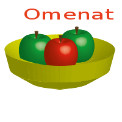

Adobe Illustratorin perusteet
Näissä jälkimmäisissä kuvankäsittelyharjoituksissa kokeillaan vektorigrafiikan piirtämistä.
Harjoitus 1
Talo.
- Käynnistä Adobe Illustrator ja tee uusi 200 px x 200 px kokoinen kuva.
- Kokeillaan piirtää talo käyttämällä Rectangle Tool -työkalua ja Line Segment Tool-työkalua.
- Kokeile piirtää neliöitä (seinät, ikkunat, ovi, savupiippu), muuta kokoa valintatyökalulla (Selection Tool)
- Piirrä taloon lisäyksiä viivatyökalulla, kokeile valintatyökalulla kytkeä Anchor-pisteet oikeisiin kohtiin.
- Kun tietyt osat kuuluvat yhteen voit valita ne (Ctrl-napin avulla) ja yhdistää (Group) yhdeksi kokonaisuudeksi.
- Kun teet viivojen avulla yhtenäisen muodon sinun tulee Group-toiminnon lisäksi vielä liittää muodot yhteen (Object / Path / Join)
- Kokeile värittää talo mieleiseksesi
- Tallenna kuva .svg-muodossa kansioosi talteen, nimeä esimerkiksi illustrator_harjoitus_1.svg.
Harjoitus 2
Omakuva
- Aloita uusi 200 px x 200 px kuva.
- Kokeile piirtää Paint Brush tool-työkalun avulla oma kuvasi. Tutki miten pystyt muuttamaan viivojen sijaintia pisteiden avulla jälkikäteen.
- Väritä kuva. Kun laitat taustavärin menevät värit mahdollisesti ihan sekaisin - kokeile järjestää muotoja hiiren oikealla oikeaan järjestykseen (hiiren oikea, Arrange / Bring to Front, Send to Back).
Harjoitus 3

Harjoitus 4
Logo
- Suunnittele yritykselle logo Illustrator-ohjelman avulla.
- Yrityksen ei tarvitse olla IT-alalla vaan voit käyttää mielikuvitustasi.
Esimerkkejä:
- Logo lemmikkieläintarvikeliikkeelle
- Logo atk-huoltoyritykselle
- Logo autovuokraamolle
Harjoitus 5
HTML-sivu kuville Photoshop ja Illustrator-kuville.
- Laadi yksinkertainen HTML-sivu tekemillesi kuville.
- Lisää kuville alt-tagit ja tarvittaessa muuta kokoa (width tai height) sopivaksi.
- Lisää myös tämän harjoituksen kuvat svg-muodossa tallennettuina.
Harjoitus 6
Tutoriaaleihin tutustuminen
- Tutki mitä Illustrator-tutoriaaleja löydät. Valitse yksi tutoriaali jota lähdet totettamaan. Kannattaa valita sellainen joka on tehtävissä kohtuullisessa ajassa (osa tutoriaaleista on hyvin monimutkaisia).
- Tallenna työ svg-muodossa. Lisää tutoriaalissa tekemäsi työ mukaan html-sivullesi.
- Esimerkki kokoelmasta erilaisia tutoriaaleja: